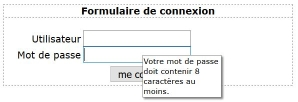

Description

Ce composant permet d'afficher une infobulle sur l'activation d'un élément, par exemple un champ de formulaire.
Restitution
- Le contenu et vocalisé lorsque l'infobulle devient visible.
Interactions de base au clavier
Les interactions au clavier sont :
- La touche Échap ferme l'infobulle.
Motif de conception : Tooltip (WAI-ARIA Authoring Practices 1.1)
Test du tooltip avec NVDA
- Utiliser la touche Tabulation pour aller jusqu'au champ du mot de passe.
- NVDA passe automatiquement en mode formulaire. Si ce n'est pas le cas, activer ce mode à l'aide des touches NVDA + Espace.
- Lorsqu'il arrive sur le champ « mot de passe », NVDA annonce : « mot de passe, édition protégé, votre mot de passe doit contenir 8 caractères au moins » et les instructions pour remplir un champ mot de passe.
Rappel : afin que l'infobulle soit annoncée par NVDA, il est nécessaire que la case à cocher « annoncer la description de l'objet » soit activée dans « Préférences > Présentation des objets ». Il est aussi nécessaire que le mode formulaire soit activé. Dans le cas contraire, l'infobulle ne sera pas vocalisée.
Test du tooltip avec VoiceOver
- Utiliser la touche Tabulation pour aller jusqu'au champ du mot de passe.
- Lorsqu'il arrive sur le champ « mot de passe », VoiceOver annonce : « modifiez le texte sécurisé avec le menu de remplissage automatique », puis « Votre mot de passe doit contenir 8 caractères au moins ».
Rappel : afin que l'infobulle soit annoncée par VoiceOver, il est nécessaire que la case à cocher « lire la bulle d'aide » soit activée dans « utilitaire VoiceOver », catégorie « Verbosité », onglet « indice ».